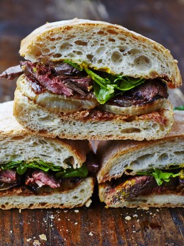

Steak Sandwich

Description
A comfort food classic compromised of beef, fried vegetables and cheese all wrapped in
a crunchy bread roll
Ingredients
- 1 Tiger roll per serving or tiger baguette
- 200g beef steak (choose leaner options for a healthier alernatives but almost all cuts work)
- 1 Bell pepper
- 25g Shredded mozarella
- 25g Shredded cheddar
- 1 Onion
- 20g Oil
- Salt, Pepper, mixed herbs to taste
Method
- Dice your onions and slice your bell peppers into short strips
- Slice your beef into thin strips against the grain
- Add your salt, pepper and seasoning to your beef
- Heat up the oil in a cast iron skillet
- Add your vegetables to the oil and stir for 1 minute
- Add your beef and let it cook until the water has all dried up and your beef is cooked through
- Remove your beef and vegetables from the skillet
- Slice your roll/bread in half
- Grill the inside until a crust develops
- Remove bread and add your beef and vegetable mixture to your sandwich
- Add your cheese and sauces of choice
- Enjoy